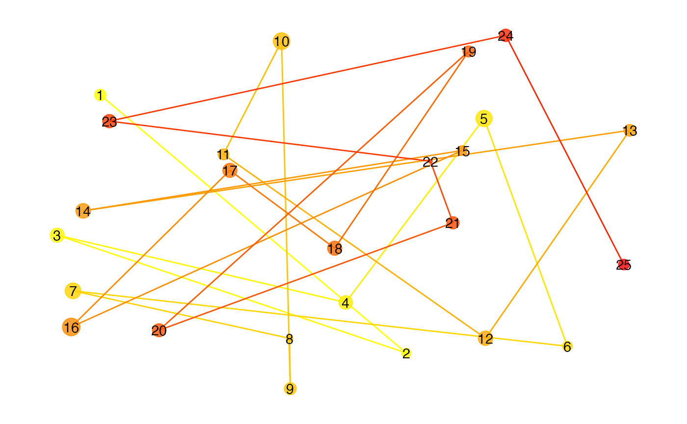
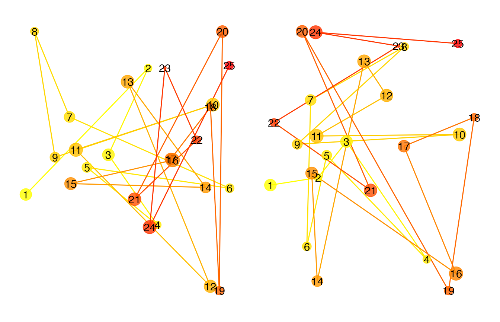
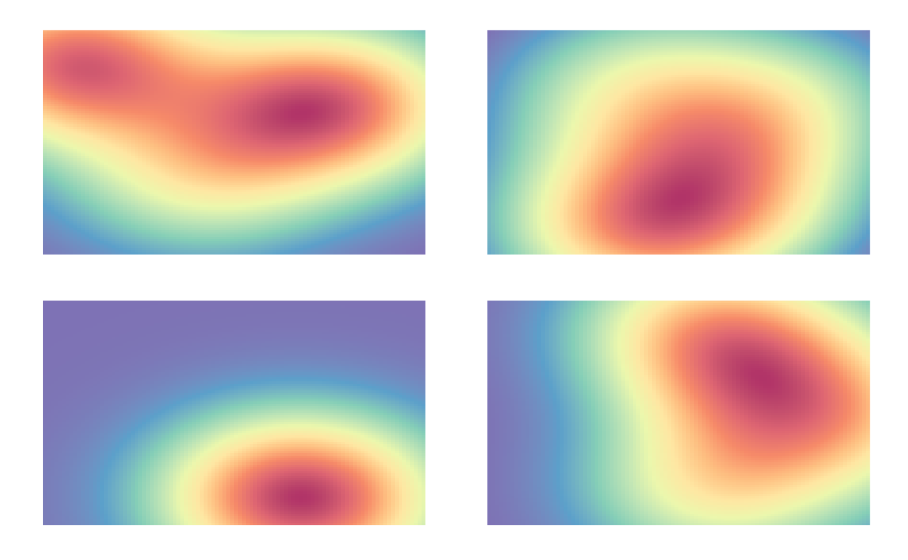
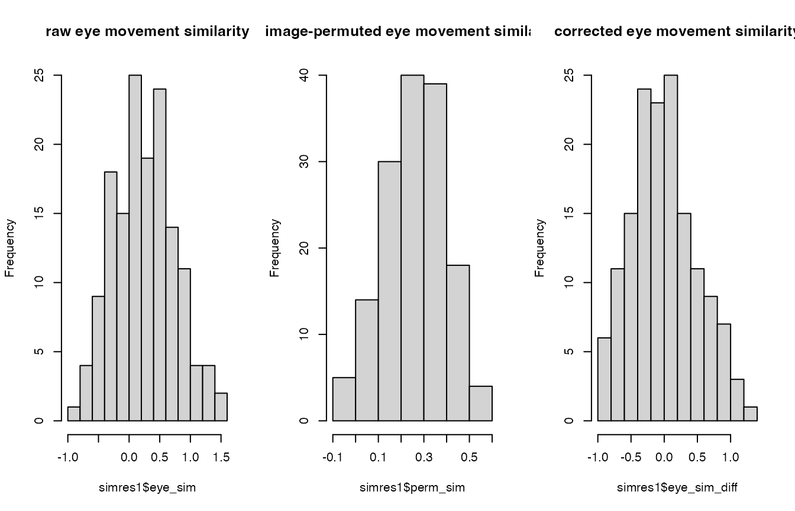

Overview
Overview.RmdEye-movement similarity analysis
The main goal of this eyesim is to provide tools for computing measures of similarity between eye-movement fixation data collected over a series of trials embedded in an experimental design. A major focus of the library is to offer easy ways to compare fixation patterns between two experimental states, for example, between perceiving an image and remembering that same image. These kinds of analyses are useful in assessing and quantifying so-called “eye-movement reinstatement” in studies of memory. Below we describe some basic aspects of the library that should allow one to get started with it.
A Basic unit: the fixation group
A fixation group is a set of eye-movement fixations that comprise a meaningful unit in a study, for example, a trial, a condition, a participants, a time window, etc. Every fixation group contains a set of xy coordinates and corresponding vectors indicating the onset (when did the fixation start?) and the duration (how long did the fixation last?) of the sequence of fixations. Below we create a fixation group from a set of 3 coordinates occurring at at times 0, 10, and 60.
After creating a fixation_group object, we then plot it to visualize the location of the three fixations. The size of each point is scaled by duration and the color of each point is mapped to the onset time, with yellow colors being early-ocurring and red colors being late-occurring in this group.
library(eyesim)
library(patchwork)
library(dplyr)
fg <- fixation_group(x=c(-100, 0, 100), y=c(0, 100, 0), onset=c(0,10,60), duration=c(10,50,100))
plot(fg)
Now we create larger group consisting of 25 randomly generated eye-movements.
## generate random fixation coordinates
cds <- do.call(rbind, lapply(1:25, function(i) {
data.frame(x=runif(1)*100, y=runif(1)*100)
}))
## generate random increasing onsets
onset <- cumsum(runif(25)*100)
## construct a "fixation_group" object
fg <- fixation_group(x=cds[,1], y=cds[,2], onset=onset, duration=c(diff(onset),25))
plot(fg)
That’s a pretty busy display, but captures the sequence of eye-movements. We can also plot various kinds of “density” maps which show where the fixations were most likely to occur.
Below we show three different ways of plotting fixation density: a contour plot, a raster plot, and a filled contour plot.
p1 <- plot(fg, typ="contour", xlim=c(-10,110), ylim=c(-10,110), bandwidth=35)
p2 <- plot(fg, typ="raster", xlim=c(-10,110), ylim=c(-10,110), bandwidth=35)
p3 <- plot(fg, typ="filled_contour", xlim=c(-10,110), ylim=c(-10,110), bandwidth=35)
p1+p2+p3
#> Warning: Removed 396 rows containing missing values (geom_raster).
#> Warning: It is deprecated to specify `guide = FALSE` to remove a guide. Please use `guide = "none"` instead.
#> It is deprecated to specify `guide = FALSE` to remove a guide. Please use `guide = "none"` instead.
We can also vary the bandwidth of the two-diemnsional density estimation procedure to visualize the fixations at different levels of smoothness.
p1 <- plot(fg, typ="filled_contour", xlim=c(-10,110), ylim=c(-10,110), bandwidth=20)
p2 <- plot(fg, typ="filled_contour", xlim=c(-10,110), ylim=c(-10,110), bandwidth=60)
p3 <- plot(fg, typ="filled_contour", xlim=c(-10,110), ylim=c(-10,110), bandwidth=100)
p1+p2+p3
Computing similarity between fixation groups
Suppose we have two fixation groups, fg1 and fg2, how do we compare these coordinate sets? The eyesim package provides methods for computing similarities between spatial density maps. Below, we generate two eye-movement patterns, one of which is a perturbed version of the other. Then we compute a series of similarity metrics on the two patterns.
cds <- do.call(rbind, lapply(1:25, function(i) {
data.frame(x=runif(1)*100, y=runif(1)*100)
}))
cds2 <- do.call(rbind, lapply(1:25, function(i) {
if (i %% 2 == 0) {
data.frame(x=runif(1)*100, y=runif(1)*100)
} else {
data.frame(x=cds[i,1], y=cds[i,2])
}
}))
onset <- cumsum(runif(25)*100)
fg1 <- fixation_group(x=cds[,1], y=cds[,2], onset=onset, duration=c(diff(onset),25))
fg2 <- fixation_group(x=cds2[,1], y=cds2[,2], onset=onset, duration=c(diff(onset),25))
p1 <- plot(fg1)
p2 <- plot(fg2)
p1+p2
To compute the similarity between any two fixation_groups we use the similarity generic function. First we convert the fixation_groups into eye_density objects and then compute their similarity. The default metric for comparing two density maps is the Pearson correlation coefficient.
ed1 <- eye_density(fg1, sigma=50, xbounds=c(0,100), ybounds=c(0,100))
ed2 <- eye_density(fg2, sigma=50, xbounds=c(0,100), ybounds=c(0,100))
s1 <- similarity(ed1,ed2)
s1
#> [1] 0.3286463We can compute other similarity measures as well. Below we compute similarity using the Pearson correlation, Spearman correlation, the Fisher-transformed Pearson correlation, the cosine similarity, the “l1” similarity based on the 1-norm, the Jaccard similarity (from proxy package), and the distance covariance (dcov from the energy package).
methods=c("pearson", "spearman", "fisherz", "cosine", "l1", "jaccard", "dcov")
for (meth in methods) {
s1 <- similarity(ed1,ed2, method=meth)
print(paste(meth, ":", s1))
}
#> [1] "pearson : 0.328646304420908"
#> [1] "spearman : 0.334647525839503"
#> [1] "fisherz : 0.341309885731274"
#> [1] "cosine : 0.882424604889393"
#> [1] "l1 : 0.56789686447425"
#> [1] "jaccard : 0.78948120531418"
#> [1] "dcov : 0.382383632362748"Computing similarity between set of fixation groups in an experiment
Suppose we have a memory experiment in which images are presented during an “encoding” block and also during a retrieval/recognition block. Some images are repeated (or cued in some way) and subjects asked to recognize (or recall) the images. In this situation, we might want to compute the pairwise similarity between encoding and retrieval trials when the image was repeated. We might also want to control for non-specific eye-movement similarity between any two arbitrary encoding and retrieval trials.
Here we will simulate data from an experiment in which 50 images are shown during an encoding block and then the same 50 images are shown (or cued) during a retrieval block. We will then compute the eye-movement similarity between the encoding and retrieval trials corresponding to the same imege and the average similarity between a set of non-corresponding encoding and retrieval trials.
We will generate data for three participants, each of which has 50 encoding and 50 retrieval trials. We will use the eye_table data structure, which is an extension of data.frame to hold the data.
The the code below, the function gen_fixations generates a number of fixations (between 1 and 10) that are randomly distributed in a 100 by 100 coordinate frame. Although the fixations for every trial are randomly selected, we assign an experimental condition (“encoding”, “retrieval”) and subject id (“s1”, “s2”, “s3”) to each set of generated coordinates.
gen_fixations <- function(imname, phase, trial, participant) {
## generate some number of fixation between 1 and 10
nfix <- ceiling(runif(1) * 10)
cds <- do.call(rbind, lapply(1:nfix, function(i) {
data.frame(x=runif(1)*100, y=runif(1)*100)
}))
onset <- cumsum(runif(nfix)*100)
df1 <- data.frame(x=cds[,1], y=cds[,2], onset=onset,
duration=c(diff(onset),100), image=imname,
phase=phase, trial=trial, participant=participant)
}
df1 <- lapply(c("s1", "s2", "s3"), function(snum) {
lapply(c("encoding", "retrieval"), function(phase) {
lapply(paste0(1:50), function(trial) {
gen_fixations(paste0("im", trial), phase, trial, snum)
}) %>% bind_rows()
}) %>% bind_rows()
}) %>% bind_rows()Now we are ready to create an eye_table data structure which stores the fixations and associates them with the experimental design and a grouping structure. Here we will group the fixations by “image”, “participant”, and “phase”. The will allow sets of fixations to be grouped together in fixation_groups so that eye-movement similarity analyses can be carried out. Without grouping variables, there is no way to know how to pool eye-movements together in sets appropriate for kernel density estimation or other analyses.
eyetab <- eye_table("x", "y", "duration", "onset", groupvar=c("participant", "phase", "image"), data=df1)#> # A tibble: 300 × 4
#> # Groups: participant, phase, image [300]
#> participant phase image fixgroup
#> <chr> <chr> <chr> <list>
#> 1 s1 encoding im1 <fixation_group [9 × 6]>
#> 2 s1 encoding im10 <fixation_group [8 × 6]>
#> 3 s1 encoding im11 <fixation_group [2 × 6]>
#> 4 s1 encoding im12 <fixation_group [4 × 6]>
#> 5 s1 encoding im13 <fixation_group [8 × 6]>
#> 6 s1 encoding im14 <fixation_group [6 × 6]>
#> 7 s1 encoding im15 <fixation_group [10 × 6]>
#> 8 s1 encoding im16 <fixation_group [2 × 6]>
#> 9 s1 encoding im17 <fixation_group [4 × 6]>
#> 10 s1 encoding im18 <fixation_group [3 × 6]>
#> # … with 290 more rowsNow we are ready for a fixation similarity analysis. We will compute the similarity between encoding-retrieval pairs, such that each pair consists of the same image viewed at encoding and retrieval, respectively. In essence, we need to “match” each retrieval trial with its corresponding encoding trial, such that the viewed images in both conditions are the same.
The first step is to compute “density maps” for each fixation_group, defined by the intersection of the participant, image, and phase variables and encoded in the eyetab object.
Below we compute the density maps for all combinations of phase, image, and participant and plot the first four density maps of the resulting set.
eyedens <- density_by(eyetab, groups=c("phase", "image", "participant"), sigma=100, xbounds=c(0,100), ybounds=c(0,100))
p1 <- plot(eyedens$density[[1]])
p2 <- plot(eyedens$density[[2]])
p3 <- plot(eyedens$density[[3]])
p4 <- plot(eyedens$density[[4]])
(p1 + p2) / (p3+ p4)
Below we print the first 10 rows of the resulting data.frame, which contains the eye_density objects stored in the density variable.
eyedens
#> # A tibble: 300 × 5
#> # Rowwise:
#> phase image participant fixgroup density
#> <chr> <chr> <chr> <list> <list>
#> 1 encoding im1 s1 <fixation_group [9 × 6]> <ey_dnsty [4]>
#> 2 encoding im1 s2 <fixation_group [4 × 6]> <ey_dnsty [4]>
#> 3 encoding im1 s3 <fixation_group [9 × 6]> <ey_dnsty [4]>
#> 4 encoding im10 s1 <fixation_group [8 × 6]> <ey_dnsty [4]>
#> 5 encoding im10 s2 <fixation_group [6 × 6]> <ey_dnsty [4]>
#> 6 encoding im10 s3 <fixation_group [9 × 6]> <ey_dnsty [4]>
#> 7 encoding im11 s1 <fixation_group [2 × 6]> <ey_dnsty [4]>
#> 8 encoding im11 s2 <fixation_group [1 × 6]> <ey_dnsty [4]>
#> 9 encoding im11 s3 <fixation_group [4 × 6]> <ey_dnsty [4]>
#> 10 encoding im12 s1 <fixation_group [4 × 6]> <ey_dnsty [4]>
#> # … with 290 more rowsNow that we have the set of eye_density maps, we can compute a similarity analysis. To do this, we use the template_similarity function. We want to compare each “retrieval” density map to its corresponding encoding density map (the “template”). And we want to “match” on the name of the image that was first studied (during “encoding”) and later recognized (during “retrieval”).
First, we split out the encoding and retrieval trials using the dplyr::filter method. Next we call template_similarity and indicating that pairs should matched by the image variable. We choose the fisherz similarity measure and correct for non-specific eye-movement similarity using 50 permutations in which similarity is computed for non-matching image pairs and subtracted from the similarity score. The raw similarity score is returned as eye_sim and the permutation-corrected score is returned as eye_sim_diff. The similarity score among permuted pairs is also returned as perm_sim.
Because the eye-movement fixations were generated randomly, we do not expect a non-zero similarity score for the eye_sim_diff variable, and we can test that with a one-sample t-test.
set.seed(1234)
enc_dens <- eyedens %>% filter(phase == "encoding")
ret_dens <- eyedens %>% filter(phase == "retrieval")
simres1 <- template_similarity(enc_dens, ret_dens, match_on="image", method="fisherz", permutations=50)
#> template_similarity: similarity metric is fisherz
t.test(simres1$eye_sim_diff)
#>
#> One Sample t-test
#>
#> data: simres1$eye_sim_diff
#> t = -1.267, df = 149, p-value = 0.2071
#> alternative hypothesis: true mean is not equal to 0
#> 95 percent confidence interval:
#> -0.14357098 0.03138625
#> sample estimates:
#> mean of x
#> -0.05609237We can also plot the histograms of similarity scores.
par(mfrow=c(1,3))
hist(simres1$eye_sim, main="raw eye movement similarity")
hist(simres1$perm_sim, main="image-permuted eye movement similarity")
hist(simres1$eye_sim_diff, main="corrected eye movement similarity")